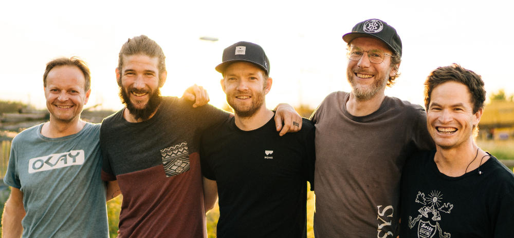

For those who travel – for those who stay

| 225 | 12.09.2026 | Open House Party, Homberg |
| 224 | 05.09.2026 | Hofair, Dallenwil |
| 223 | 11.07.2026 | Bruckfelden Open Air, Bruckfelden, DE |
| 222 | 30.05.2026 | Private Gig |
| 221 | 02.05.2026 | Lake Side Opening, Thun |
| 220 | 08.11.2025 | Earl Music Club, Muotathal |
| 219 | 03.10.2025 | Stääfe rockt, Stäfa |
| 218 | 20.09.2025 | Chrügel Openair, Wettswil a. A. |
| 217 | 16.08.2025 | Yucatan, Engelberg |
| 216 | 15.08.2025 | Spielbar Bremgarten |
| 215 | 24.05.2025 | Schüür with Jolly & the Flytrap, Luzern |
| 214 | 07.09.2024 | Riverjam Thun, Thun |
| 213 | 06.09.2024 | Solothurner Musiktage, Solothurn |
| 212 | 13.07.2024 | Muisiglanzgmeind, Wolfenschiessen |
| 211 | 25.05.2024 | Open Air Bischofszell, Bischofszell |
| 210 | 10.04.2024 | Stanser Musiktage, Stans |
| 209 | 05.04.2024 | Smells like Grunge, Schüür, Luzern |
| 208 | 23.09.2023 | Acoustic @ Brunos, Gruenenwald |
| 207 | 01.09.2023 | Mammut Mountain days, Taesch |
| 206 | 19.08.2023 | Badenfahrt 2023 |
| 205 | 12.08.2023 | Heitere Open Air, Zofingen |
| 204 | 09.07.2023 | Songwriter Festival, Hilterfingen |
| 203 | 01.07.2023 | Private Gig |
| 202 | 17.06.2023 | Eienwälldli Fäscht, Engelberg |
| 201 | 06.05.2023 | Private Gig |
| 200 | 25.08.2022 | Private Gig |
| 199 | 16.07.2022 | Sound am See, Sarnen |
| 198 | 25.06.2022 | Private Gig |
| 197 | 11.06.2022 | Private Gig |
| 196 | 27.05.2022 | Pavillon, Lucerne |
| 195 | 12.05.2022 | Radio6390, Engelberg |
| 194 | 09.05.2022 | Private Gig |
| 193 | 24.09.2021 | Pavillon, Lucerne |
| 192 | 31.08.2021 | Private Gig |
| 191 | 21.08.2021 | Schloss Schwandegg, Stammheim ZH |
| 190 | 20.08.2021 | Private Gig |
| 189 | 19.08.2021 | Yucatan, Engelberg |
| 188 | 15.08.2021 | Dorfleuteliead, Buochs NW |
| 187 | 07.08.2021 | Festival am Gleis, Aarau |
| 186 | 30.07.2021 | Rotsee-Badi, Lucerne |
| 185 | 29.07.2021 | Insel Lützelau, Zürichsee |
| 184 | 05.09.2020 | Openair am Greifensee |
| 183 | 15.08.2020 | Pandemic Tour Vol.2, 6 concerts |
| 182 | 20.06.2020 | Pandemic Tour Vol.1, 9 concerts |
| 181 | 24.04.2020 | Live Streaming Concert, worldwide :) |
| 180 | 01.11.2019 | With Jolly & the Flytrap, Schüür |
| 179 | 26.10.2019 | Vogelsang, Altdorf |
| 178 | 31.08.2019 | Mountain Hostel Gimmelwald |
| 177 | 29.08.2019 | Raketebar, Zürich |
| 176 | 22.08.2019 | OpenAir SummerFERRY, Gersau/Beckenried |
| 175 | 26.07.2019 | Buvette, Luzern |
| 174 | 25.07.2019 | Insel Lützelau, Rapperswil, Zürichsee |
| 173 | 23.07.2019 | Blue Balls, Pavillion, Luzern |
| 172 | 20.07.2019 | Yucatan, Engelberg |
| 171 | 01.06.2019 | Iheimisch, Buochs |
| 170 | 24.05.2019 | Frackwoche, Technikum, Winterthur |
| 169 | 27.04.2019 | Swiss Surf Film Festival, Seebad Luzern |
| 168 | 29.12.2018 | Schüür, HebDiDe CD-Release |
| 167 | 12.09.2018 | Urban Surf, Zürich |
| 166 | 01.09.2018 | Private Bettina Gig |
| 165 | 31.08.2018 | Oxil, Zofingen |
| 164 | 25.08.2018 | Magic Woods, Ausserferrera GR |
| 163 | 11.08.2018 | Dorfstrasse, Engelberg |
| 162 | 26.07.2018 | Insel Lützelau, Rapperswil |
| 161 | 29.06.2018 | Openeye, Oberlunkhofen AG |
| 160 | 16.06.2018 | James Restaurant Lounge, Andermatt |
| 159 | 14.06.2018 | Pitschna Scena, Pontresina |
| 158 | 09.06.2018 | Winkel, Altdorf |
| 157 | 14.04.2018 | Private Rene Gig |
| 156 | 23.02.2018 | Folktreff-bonndorf.net, DE |
| 155 | 02.12.2017 | 20 Jahre OK Shop, Engelberg |
| 154 | 29.11.2017 | Support of Paradisia, Schüür |
| 153 | 04.11.2017 | Ambossrampe, Vorstadtsounds Winter |
| 152 | 19.08.2017 | Sommerfest Seerausch, Beckenried |
| 151 | 18.08.2017 | Yucatan, Engelberg |
| 150 | 15.07.2017 | Acoustic balcony, Altdorf |
| 149 | 30.06.2017 | Stanser Summer, Stans |
| 148 | 17.06.2017 | Greinergaessli, Altdorf |
| 147 | 26.05.2017 | Vorstadtsounds, Albisrieden |
| 146 | 10.09.2016 | Hofair, Dallenwil |
| 145 | 27.08.2016 | Humanitashorgen, Horgen |
| 144 | 20.08.2016 | Keltenhaus, Guggisberg |
| 143 | 14.08.2016 | Schüür im Garten, Lucerne |
| 142 | 12.08.2016 | Private Gig |
| 141 | 08.08.2016 | Brasserie-lorraine, Bern |
| 140 | 23.07.2016 | T-room, Solothurn |
| 139 | 22.07.2016 | Madeleine, Lucerne |
| 138 | 02.07.2016 | 5 years Makai, Sempach |
| 137 | 25.06.2016 | Private Gig |
| 136 | 28.05.2016 | Openairbischofszell |
| 135 | 27.05.2016 | Leibnitzhaus, Tübingen, DE |
| 134 | 21.05.2016 | Private Gig |
| 133 | 19.03.2016 | Radio RABE, Bern |
| 132 | 18.03.2016 | Musigbistrot, Bern |
| 131 | 12.03.2016 | Unplugged on tour, Andermatt |
| 130 | 28.11.2015 | Cafebar-Wandab, Zürich |
| 129 | 20.11.2015 | Kaffee Kra, Altdorf |
| 128 | 20.11.2015 | Private Gig |
| 127 | 14.11.2015 | Vogelsang, Altdorf |
| 126 | 05.11.2015 | Schüür, Support Everlast |
| 125 | 02.11.2015 | Private Gig |
| 124 | 17.10.2015 | Album Release, Senkel, Stans |
| 123 | 16.10.2015 | Minimum, Zürich |
| 122 | 10.10.2015 | Nightsessions - Cresciano |
| 121 | 10.10.2015 | Ostello-cresciano, Cresciano |
| 120 | 19.09.2015 | Palme-Fäscht, Pfäffikon |
| 119 | 22.08.2015 | Hedwigstrasse Fest, Zürich |
| 118 | 16.08.2015 | Klangspaziergang, Seedorf |
| 117 | 15.08.2015 | Private Gig |
| 116 | 14.08.2015 | 3 sombreros, Kra, Altdorf |
| 115 | 08.08.2015 | Private Gig |
| 114 | 07.08.2015 | Yucatan, Engelberg |
| 113 | 17.07.2015 | Buvette, Lucerne |
| 112 | 20.06.2015 | Safeside, Schüür, Lucerne |
| 111 | 12.06.2015 | Gaswerk-eventbar, Seewen |
| 110 | 30.05.2015 | FolkBar, Bellinzona |
| 109 | 15.05.2015 | Kanuclub, Buochs NW |
| 108 | 14.03.2015 | Sahara Bar, Winterthur |
| 107 | 28.02.2015 | Vogelsang, Altdorf |
| 106 | 02.01.2015 | Schüür, Luzern |
| 105 | 27.12.2014 | Gräppele, Wildhaus |
| 104 | 11.12.2014 | pitschna scena, Pontresina |
| 103 | 25.10.2014 | private Fäsu Gig |
| 102 | 31.08.2014 | private Gig |
| 101 | 30.08.2014 | private Gig |
| 100 | 23.08.2014 | Gardengroovement, Bischofzell |
| 099 | 02.08.2014 | private Gig, DE |
| 098 | 01.08.2014 | Leibnizhaus, Tübingen, DE |
| 097 | 31.07.2014 | OpenAir Appenzell Steinegg |
| 096 | 18.07.2014 | Buvette, Lucerne |
| 095 | 12.07.2014 | Stadtfest Lindau, Lindau, DE |
| 094 | 28.06.2014 | Pan Structure, Geneve |
| 093 | 03.04.2014 | La Niche Cafe, Melbourne, OZ |
| 092 | 23.11.2013 | Kaffee Kra, Altdorf |
| 091 | 26.10.2013 | Fäsu Private gig |
| 090 | 23.10.2013 | Jugendradio Länzgi, Stans |
| 089 | 30.08.2013 | Live Recording at Raffs, Altdorf |
| 088 | 02.07.2013 | Open Air Appenzell |
| 087 | 14.06.2013 | Bikinis unplugged, Bremgarten |
| 086 | 10.01.2013 | Senkel, Stans |
| 085 | 29.12.2012 | Graeppelen, Wildhaus |
| 084 | 16.11.2012 | Chollerchalle, Support Baby Jail |
| 083 | 01.09.2012 | Strandbad Flüelen |
| 082 | 25.08.2012 | Jubiläum Open Air Pfadi Buochs |
| 081 | 17.08.2012 | Private gig |
| 080 | 10.08.2012 | EvergrinFest, Gadmen BE |
| 079 | 03.08.2012 | Minimum bouldering, Zürich |
| 078 | 27.07.2012 | Buvette, Lucerne |
| 077 | 07.07.2012 | support of Züri West, Muri-Nights |
| 076 | 30.06.2012 | Luzernerfest, Pavillon |
| 075 | 23.06.2012 | Kraftreaktor, Lenzburg |
| 074 | 22.06.2012 | Lakesidefestival, Hergiswil |
| 073 | 15.06.2012 | Rebblütenfest, Weiningen |
| 072 | 19.05.2012 | Bankk, Wildhaus |
| 071 | 05.05.2012 | Melloblocco, Val di Mello, IT |
| 070 | 04.05.2012 | Lehnplatz, Altdorf |
| 069 | 03.05.2012 | Backstube, Stans |
| 068 | 04.11.2011 | The Date Bar, Zug |
| 067 | 29.09.2011 | Radio Vostok, Geneva |
| 066 | 17.09.2011 | private Gig |
| 065 | 02.09.2011 | Open Air, Greifensee |
| 064 | 19.08.2011 | Yucatan, Engelberg |
| 063 | 06.08.2011 | Jungfrau |
| 062 | 05.08.2011 | private Gig |
| 061 | 31.07.2011 | Lakeside is Back, Hergiswil |
| 060 | 30.07.2011 | Open Air, Hünenberg |
| 059 | 29.07.2011 | private Mely Gig |
| 058 | 17.07.2011 | private Gig, Locarno |
| 057 | 08.07.2011 | Open Air Huisberg, Sarnen |
| 056 | 15.05.2011 | Private Gig |
| 055 | 14.05.2011 | SM Ultimate Frisbee |
| 054 | 13.05.2011 | Helsinki, Zürich |
| 053 | 12.05.2011 | Brasserie 17, Interlaken |
| 052 | 16.04.2011 | Okay Shop, Engelberg |
| 051 | 15.04.2011 | Buvette, Luzern |
| 050 | 07.04.2011 | Minimum, Zürich |
| 049 | 02.04.2011 | Vogelsang, Altdorf |
| 048 | 01.04.2011 | Album Release, Engel, Stans |
| 047 | 26.03.2011 | Bankk, Wildhaus |
| 046 | 12.03.2011 | Musigbistrot, Bern |
| 045 | 18.02.2011 | Juko Pavillon, Sarnen |
| 044 | 17.02.2011 | K66, Kriens |
| 043 | 13.08.2010 | 720, Stans |
| 042 | 06.08.2010 | Open Air, Gadmen |
| 041 | 31.07.2010 | Open Air Tellsbells, Flüelen |
| 040 | 31.07.2010 | Open Air Saitensprung, Buochs |
| 039 | 16.07.2010 | Private gig |
| 038 | 09.07.2010 | Private gig |
| 037 | 03.07.2010 | Dorfplatz, Stans |
| 036 | 19.06.2010 | Rebbluten Fest, Weiningen |
| 035 | 31.05.2010 | Mammut Event, Savognin |
| 034 | 12.05.2010 | Rüti ZH, Schuetzenhaus |
| 033 | 29.04.2010 | Opening Amalgan Shop, Zurich |
| 032 | 01.04.2010 | Minimum, Zurich |
| 031 | 11.03.2010 | Schuer, support of Josh Weller |
| 030 | 26.12.2009 | Graeppele Bar, Wildhaus |
| 029 | 19.12.2009 | 1001 Bloc, Cresciano, Ticino |
| 028 | 12.12.2009 | Pan Structure, Geneve |
| 027 | 11.12.2009 | Bleu Lezard, Lausanne |
| 026 | 07.12.2009 | Pilatus Indoor, Lucerne |
| 025 | 28.11.2009 | Ski Lodge, Engelberg |
| 024 | 28.11.2009 | OKAY Shop, Engelberg |
| 023 | 14.11.2009 | Gaskessel, Berne |
| 022 | 13.11.2009 | Cafe Kairo, Berne |
| 021 | 05.11.2009 | Kiff, Aarau |
| 020 | 16.08.2009 | Schwanbar , Aarau |
| 019 | 06.08.2009 | Lakeside Festival, Hergiswil |
| 018 | 11.07.2009 | Gig at CC, Engelberg |
| 017 | 11.07.2009 | Garden Party @ Barmy's |
| 016 | 19.06.2009 | Girlen Alp Party |
| 015 | 11.06.2009 | Balcony Gig, Lucerne |
| 014 | 31.05.2009 | Halt auf Verlangen, Engelberg |
| 013 | 22.05.2009 | Buvette Inseli KKL, Lucerne |
| 012 | 11.05.2009 | Mammut Event, Seelisberg |
| 011 | 08.05.2009 | Musigbistrot, Bern |
| 010 | 04.04.2009 | Vogelsang, Altdorf |
| 009 | 03.04.2009 | Chaeslager, Stans |
| 008 | 27.03.2009 | Herbert, Baden |
| 007 | 08.03.2009 | Allmend, Lucerne |
| 006 | 04.03.2009 | Schüür, Support of Charlie Winston |
| 005 | 12.02.2009 | Guetschbaehnli, Lucerne |
| 004 | 05.02.2009 | Minimum, Zürich |
| 003 | 02.08.2007 | Minimum, Zürich with Rita Hey |
| 002 | 11.07.2007 | Schüür, Singer and his Song |
| 001 | 24.09.2006 | Schüür, Support Daniel Lemma |